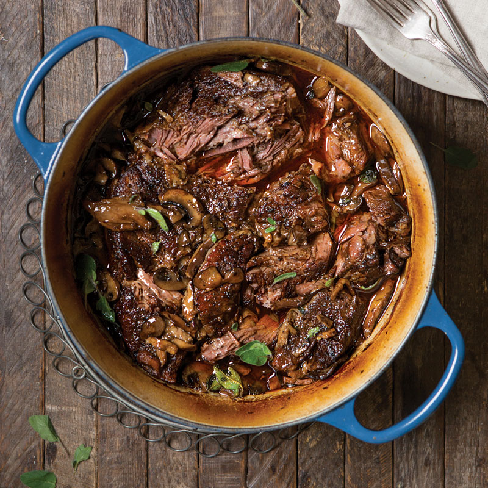

Red Wine Pot Roast

Description
This is one of the most delicous meat recipes that you will ever enjoy. The secret of this dish's amazing flavor is the slow-cooking method implimented along witht the red wine.
After this beef marinates in it's own juices, each bite melts in your mouth.
This is one of the easiest dishes to make as all you need to do is add your indredients to a slow cooker and wait for the magic to happen.
Set it, forget it and enoy!
Ingredients
- tablespoons olive oil, divided
- cups sliced fresh assorted mushrooms
- 4 cloves garlic, smashed
- 1 (3- to 4-pound) chuck roast
- 1½ tablespoons kosher salt
- 1½ teaspoons ground black pepper
- 1 cup low-sodium beef broth
- ½ cup dry red wine
- ¼ cup dried porcini mushrooms
- 2 tablespoons tomato paste
- 10 sprigs fresh oregano
- fresh oregano sprigs
Steps
- Preheat oven to 275°.
- In a large Dutch oven, heat 2 tablespoons oil over medium-high heat. Add mushrooms and garlic; cook, stirring occasionally, until golden brown, about 3 minutes. Remove from pot.
- Add remaining 1 tablespoon oil to pot. Sprinkle all sides of roast with salt and pepper. Add roast; sear, turning occasionally, until browned on all sides, about 3 minutes per side. Remove from pot.
- Add broth, wine, porcini mushrooms, and tomato paste, scraping bottom of pot; bring to a boil. Remove from heat. Add roast; place oregano and reserved mushroom mixture on top of roast. Cover with lid.
- Bake until fork-tender, about 1 hour per pound. Let stand for 5 minutes before serving. Garnish with oregano, if desired.